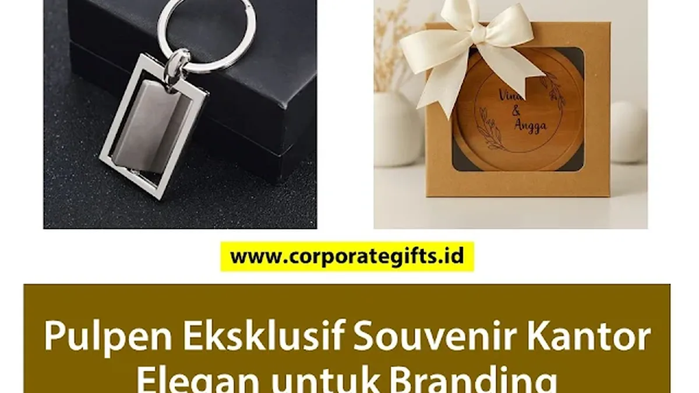

Corporate Gifts ID - Dalam lanskap bisnis modern yang serba cepat, detail kecil sering kali menjadi faktor penentu persepsi profesionalisme sebuah perusahaan. Menyerahkan pulpen eksklusif custom logo dan alat tulis premium sebagai souvenir kantor profesional adalah langkah taktis cerdas untuk memperkuat brand equity, menjalin kedekatan emosional dengan mitra bisnis, serta meningkatkan rasa bangga karyawan.
Berbeda dengan merchandise elektronik yang rentan mengalami penurunan daya baterai atau usang teknologinya, instrumen tulis berbahan metal kokoh memiliki daya pakai bertahun-tahun. Setiap goresan tanda tangan di atas lembar perjanjian bisnis menjadi momentum pengingat brand (brand recall) yang elegan dan bernilai tinggi.
Keunggulan Strategis Souvenir Pulpen Metal Eksekutif:
- Frekuensi Penggunaan Tinggi: Dipakai berulang kali setiap hari di ruang kerja, rapat direksi, maupun pertemuan eksternal.
- Efisiensi Biaya Berbanding Dampak (High ROI): Memberikan impresi prestisius setara gift set mewah dengan alokasi budget yang jauh lebih terukur.
- Ketahanan Branding Permanen: Personalisasi logo melalui teknik laser engraving tidak akan luntur atau terkelupas oleh gesekan saku.
- Kesesuaian Universal: Diterima dengan sangat baik oleh semua jajaran, mulai dari pimpinan C-Level, staf manajerial, hingga tamu VIP seminar.
Mengapa Pulpen Eksklusif Sangat Efektif untuk Branding Korporat?
Keberhasilan program corporate gifting diukur dari seberapa sering produk tersebut digunakan oleh penerima. Berikut 3 alasan utama mengapa pulpen metal custom selalu menjadi instrumen promosi favorit:
-
Visibilitas Berkelanjutan di Meja Kerja:
Pulpen berkualitas tidak disimpan di dalam laci, melainkan diletakkan di atas meja kerja (desk organizer) atau diselipkan di saku kemeja. Hal ini menciptakan eksposur visual harian tanpa batas bagi logo perusahaan Anda. -
Mencerminkan Standar Mutu Perusahaan:
Bobot logam yang seimbang dan aliran tinta yang mulus (smooth gliding) memberikan pengalaman menulis yang memuaskan. Kualitas fisik ini secara psikologis diasosiasikan dengan kualitas layanan profesional yang Anda tawarkan. -
Fleksibilitas Integrasi Paket Gift Set:
Pulpen eksekutif sangat mudah dipadupadankan dengan produk lain seperti buku agenda kulit custom, tumbler stainless, atau flashdisk kartu untuk menciptakan paket bingkisan seremonial yang lengkap.

Hasil akhir laser engraving mikro yang presisi dan rapi pada bodi logam pulpen berlapisan matte black.
4 Jenis Pulpen dan Alat Tulis Eksekutif yang Paling Tepat
Untuk memastikan cinderamata sesuai dengan profil audiens, kenali 4 kategori instrumen tulis berikut:
1. Pulpen Metal Rollerball (Paling Populer)
Menggabungkan kepraktisan ballpoint dengan kehalusan tinta berbasis air khas fountain pen. Memberikan tarikan garis yang tegas dan cepat kering, sangat ideal untuk aktivitas kerja manajerial sehari-hari.
2. Executive Fountain Pen (Pena Bulu Mewah)
Pena klasik dengan mata pena logam berukir (nib) yang elegan. Ditujukan secara khusus bagi jajaran pimpinan direksi atau mitra B2B VIP untuk menandatangani dokumen strategis korporasi.
3. Pulpen Multifungsi Stylus & Laser Pointer
Alat tulis pintar yang dilengkapi ujung karet konduktif untuk layar sentuh tablet serta laser pointer terintegrasi, sangat menunjang kebutuhan presentasi para profesional modern.
4. Executive Pen Set + Leather Hardcover Notebook
Paket terpadu berisi pulpen metal grafir dan buku agenda berbalut kulit sintetis polyurethane (PU Leather) dengan teknik deboss logo di dalam kotak kemasan rigid magnetik berkelas.
5 Tips Memilih Pulpen Custom Agar Tampil Mewah dan Berkelas
Agar cinderamata kantor Anda meninggalkan impresi yang berkesan dan tidak terkesan murahan, terapkan 5 panduan kurasi berikut:
- Pilih Material Logam Solid: Hindari bodi plastik ringan berlapis chrome palsu. Gunakan logam aluminium anodized, kuningan (brass), atau stainless steel yang memiliki bobot mantap saat digenggam.
- Terapkan Konsep Subtle Branding: Gunakan ukuran logo yang proporsional di bagian tutup atau klip pena. Tambahkan opsi grafir nama personal penerima untuk meningkatkan nilai emosional hadiah.
- Gunakan Refill Tinta Standar Internasional: Pastikan jenis isi ulang tinta (refill cartridge seperti tipe Parker style) mudah ditemukan di pasaran sehingga pulpen dapat terus digunakan bertahun-tahun.
- Perhatikan Kualitas Kotak Kemasan: Hindari menyerahkan pulpen dalam kemasan plastik mika polos. Gunakan rigid box magnetik, boks kayu solid, atau pouch berbahan beludru (velvet sleeve).
- Bekerja Sama dengan Vendor Kredibel: Pilih produsen spesialis seperti CorporateGifts.ID yang menjamin presisi mesin laser fiber terkini dan proses quality control yang ketat.

Kombinasi harmonis antara pulpen metal eksklusif dan buku agenda berlogo untuk cinderamata korporat.
Tabel Matriks Spesifikasi Pulpen & Alat Tulis Kantor Premium
Berikut matriks perbandingan instrumen tulis eksekutif untuk memudahkan penyusunan proposal pengadaan di perusahaan Anda:
| Kategori Produk | Material Utama | Metode Personalisasi | Tipe Kemasan | Target Penggunaan |
|---|---|---|---|---|
| Executive Ballpoint | Aluminium Anodized | Laser Engraving Putih / Silver | Paper Sleeve / Velvet Pouch | Seminar Kit & Karyawan Kantor |
| Premium Rollerball (Favorit) | Brass Logam Kuningan Solid | Laser Engraving Gold Trim | Magnetic Hardbox + Spons EVA | Klien B2B & Rapat Manajerial |
| Classic Fountain Pen | Stainless Steel + Iridium Nib | Grafir Nama Personal + Logo | Luxury Wooden Box Berukir | Dewan Direksi & Tamu Kehormatan |
| 2-in-1 Executive Stationery Set | Metal Pen + PU Leather Agenda | Grafir Laser + Deboss Cover | Rigid Gift Box Eksklusif | Apresiasi Akhir Tahun & MoU |
Strategi Distribusi Pulpen Eksklusif di Berbagai Agenda Bisnis
Memilih momen yang tepat saat membagikan souvenir akan melipatgandakan dampak psikologis bagi penerima:
- Seremoni Penandatanganan Kontrak (MoU Signing): Sediakan dua buah pulpen metal berukir nama kedua pimpinan institusi untuk digunakan saat seremoni berlangsung dan dibawa pulang sebagai memorabilia.
- Paket Seminar Kit Eksekutif: Sematkan pulpen rollerball elegan di dalam map agenda seminar kepemimpinan atau konferensi regional untuk mengangkat gengsi acara.
- Onboarding Karyawan Baru (Welcome Kit): Hadirkan pulpen berlogo perusahaan di hari pertama kerja untuk menumbuhkan rasa memiliki (sense of belonging) sejak awal masa bakti.
- Hadiah Hari Jadi Perusahaan: Bagikan set alat tulis edisi khusus bertuliskan tahun pencapaian perusahaan kepada seluruh mitra strategis.
Pertanyaan Seputar Souvenir Pulpen Eksklusif (FAQ)
Kesimpulan dan Solusi Pengadaan di CorporateGifts.ID
Mengalokasikan anggaran untuk pulpen eksklusif custom logo adalah investasi branding jangka panjang dengan tingkat pengembalian nilai (ROI) yang terbukti efektif. Melalui pemilihan material yang kokoh, kustomisasi grafir yang presisi, dan kemasan berkelas, cinderamata alat tulis Anda akan menjadi representasi nyata dari integritas profesional perusahaan.
Wujudkan pengadaan pulpen eksekutif, stationery set, dan merchandise promosi kantor bersama CorporateGifts.ID. Jelajahi katalog lengkap kami di halaman e-katalog resmi atau dapatkan penawaran harga resmi (RAB) melalui formulir permintaan penawaran sekarang juga.
Disclaimer: Pilihan produk, variasi kemasan hardbox, dan estimasi biaya per unit dapat disesuaikan secara fleksibel dengan pagu anggaran korporat Anda melalui tim konsultan CorporateGifts.ID.